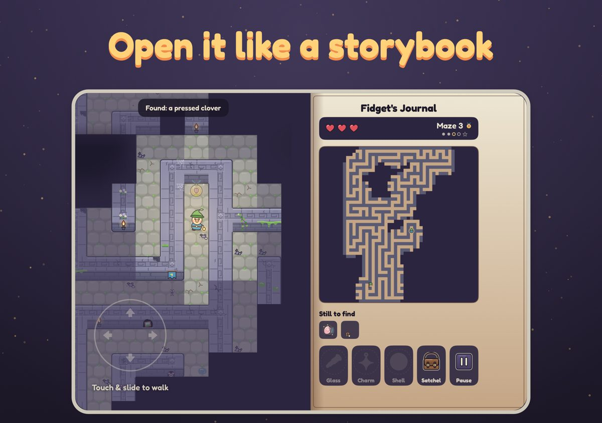
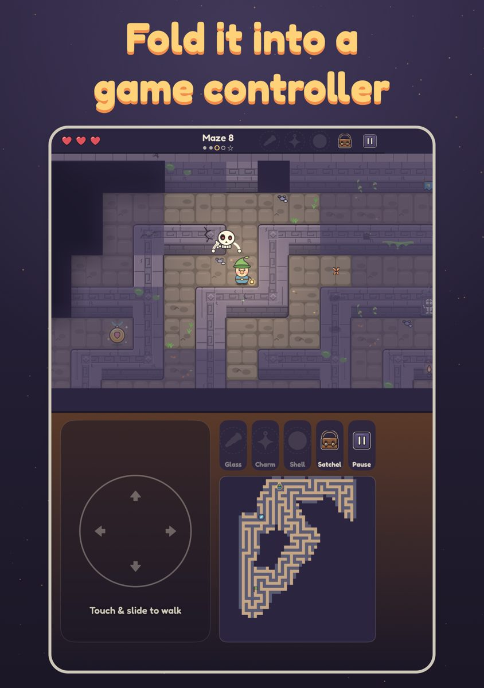
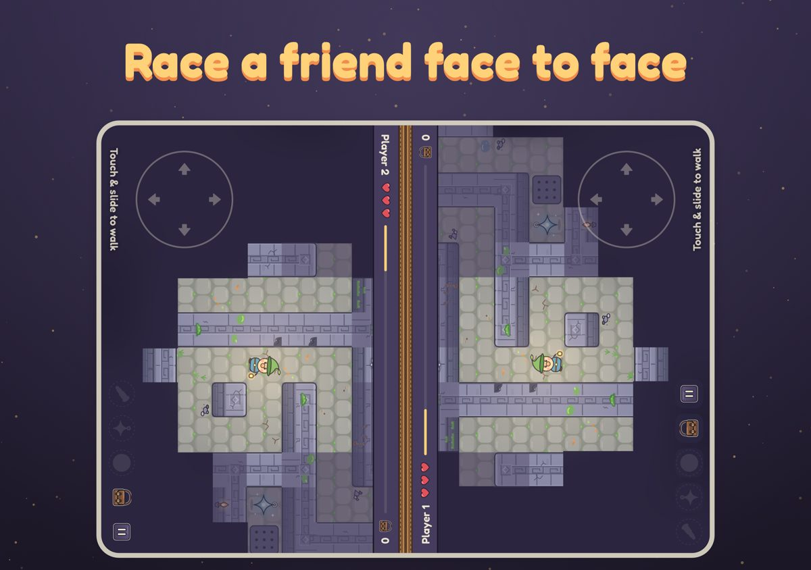

Fidget: Mazes of Boreternia
Made for iPhone Duo
Fidget plays on every iPhone and iPad. On the foldable iPhone Duo it also changes shape with the phone.

Closed: the cover screen
With the Duo closed, Fidget plays just like on an iPhone: one thumb on the pad, the maze filling the screen. The first time you open the menu it suggests trying the phone folded like a book.
Open the book
Unfold the Duo from its cover screen, on the menu or mid-maze, and the game opens like a storybook: the leather cover turns over the open screen and Fidget's lantern flares as the maze comes back. Open it mid-maze for the Turn the Page achievement.
Half-folded like a book: Storybook mode

Hold the Duo half-folded like a book and the screen becomes two pages. One page is the maze. The other is Fidget's Journal: your hearts and maze number, a live map of what you've explored, what's still to find, and big buttons for the Looking Glass, Spark Charm, Echo Shell, Satchel and Pause. Settings, the Wardrobe, the Vault and the Map open on a page of their own, clear of the fold. Left-handed? Settings → iPhone Duo → Flip pages swaps the sides.
Half-folded like a laptop: Controller mode

Stand the Duo on a table like a little laptop and the top half shows the maze while the bottom half becomes a control deck: a big pad, large tool buttons, the map, the Satchel and Pause. Your thumbs never cover the maze. Flip controls in Settings puts the deck on top if you prefer.
Opened flat: Duo Duel

Lay the open Duo flat between two players and tap Race a friend on the menu. Each player gets their own half of the screen, turned to face them, with their own pad, and you race the same maze. The fold shows how your opponent is doing, and the first to the exit wins. Each player can set a name, a pad position and their own Wardrobe look under Settings → iPhone Duo → Duo Duel. Races never touch your own run or progress.
Opened flat on your own
Open the Duo flat and play solo, and the maze gets the whole big screen, the same top bar as on iPhone, and room to see further around Fidget. Folding or unfolding mid-maze pauses for a moment and carries on where you were.
Questions?
See Support, or open an issue at github.com/averack/fidget-privacy/issues and mention you're on an iPhone Duo. Duo Duel player names stay on your phone; see the privacy policy.